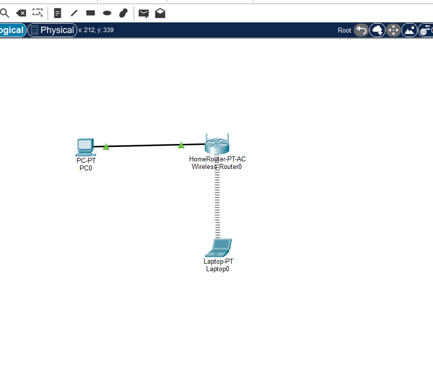
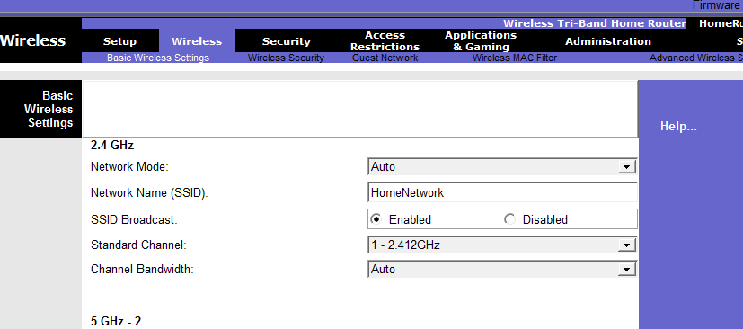
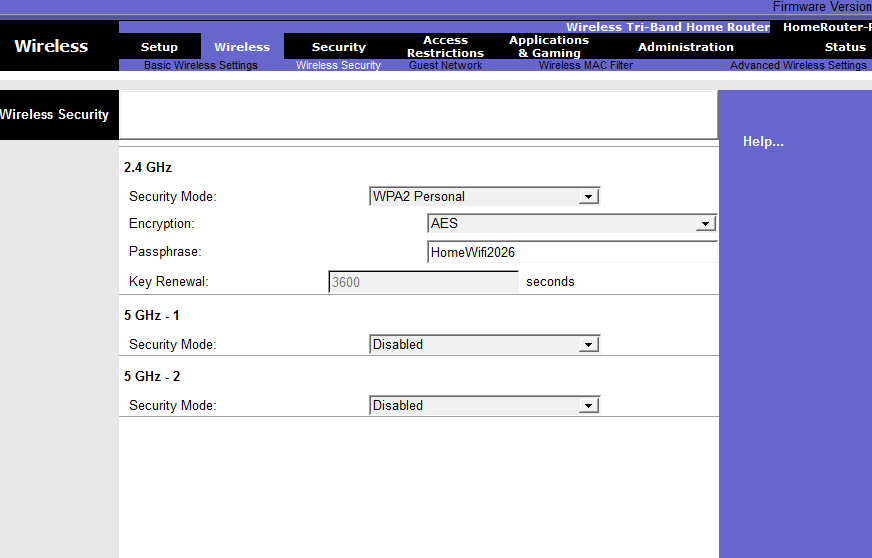
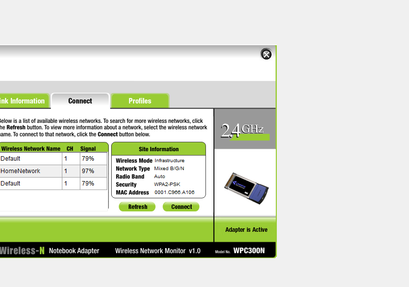
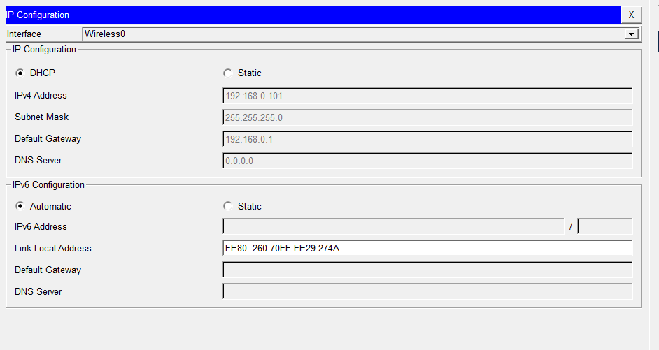

1. Introduction
After learning about home networks, routers, Ethernet, wireless networks, SSIDs, wireless security, DHCP, and different ways devices connect to a network, I wanted to put these concepts into practice.
In this lab, I created a simple home network using Cisco Packet Tracer. The network contains a wireless router, a PC connected using an Ethernet cable, and a laptop connected wirelessly.
The purpose of this exercise was not just to make the devices connect. I wanted to understand what each part of the network was doing and how the wired and wireless devices could belong to the same local network.
2. What I Wanted to Build
The final network was designed to represent a small home network.
Wireless connection
~~~~~~~~~~~
/
[ Laptop ]
|
|
[ Wireless Router ]
|
|
Ethernet cable
|
[ PC ]
The PC represents a device that is connected to the home router using a physical Ethernet cable.
The laptop represents a device that connects to the same home network using Wi-Fi.
The wireless router is the central device connecting both types of devices.

Figure 1: My completed home network topology in Packet Tracer.
3. Devices Used
I used three main devices for this exercise.
| Device | Purpose |
|---|---|
| Wireless Router | Provides the home network, wireless connection, DHCP services, and connectivity for the devices. |
| PC | Represents a wired device connected using Ethernet. |
| Laptop | Represents a wireless device connected through Wi-Fi. |
4. Building the Topology
Step 1: Add the Wireless Router
I opened Cisco Packet Tracer and started with an empty workspace.
From the device selection area, I selected the wireless/home networking devices and placed a Wireless Router in the workspace.
I used a wireless router instead of a Cisco 2901 router because this exercise is focused on a typical home network and its wireless configuration.
Step 2: Add the PC
I opened the End Devices section, selected a PC, and placed it near the wireless router.
Step 3: Add the Laptop
I selected a Laptop from the End Devices section and placed it near the router.
At this point, the three devices were present in the workspace, but they were not fully connected yet.
5. Connecting the PC Using Ethernet
The first connection I made was between the PC and the wireless router.
Step 1: Select the cable
- I clicked the Connections icon in Packet Tracer.
- I selected Copper Straight-Through.
Step 2: Connect the PC
- I clicked the PC.
- I selected its FastEthernet0 interface.
- I clicked the wireless router.
- I selected one of the router's Ethernet/LAN ports.
I did not use the router's Internet/WAN port for this connection. The PC is part of the local home network, so it connects to one of the router's LAN ports.
Figure 2: The PC is connected to the wireless router using an Ethernet connection.
6. Configuring the PC for DHCP
After connecting the PC to the router, I configured the PC to obtain its network information automatically.
What is DHCP?
DHCP stands for Dynamic Host Configuration Protocol. It allows a device to receive network configuration automatically from a DHCP server.
Instead of manually typing an IP address, subnet mask, default gateway, and other information, the device asks the DHCP server for the information it needs.
How I configured it
- I opened the PC.
- I selected the Desktop tab.
- I opened IP Configuration.
- I selected DHCP.
The router then provided the PC with its network configuration.
This demonstrated an important idea: the PC did not need me to manually assign its IP address.
The actual IP address given to the PC depends on the network configuration in Packet Tracer, so the address on my PC may not be the same as the address on another person's PC.
7. Configuring the Wireless Router
The next part of the lab was configuring the wireless side of the router.
I opened the wireless router and used its graphical configuration interface. Cisco's Packet Tracer examples also use the router's GUI for configuring the wireless network.
Opening the Router GUI
- I clicked the Wireless Router.
- I opened the router's configuration window.
- I selected the GUI tab.
- I opened the Wireless settings.
The GUI allowed me to configure the wireless network without entering router commands through a command-line interface.
8. Configuring the SSID
What is an SSID?
SSID stands for Service Set Identifier. In simple terms, it is the name used to identify a wireless network.
When a phone or laptop searches for nearby Wi-Fi networks, the names it displays are SSIDs.
For this lab, I changed the wireless network name to:
``` HomeNetwork```
Why did I change it?
The router may initially have a default wireless network name. Changing the SSID makes it easier to identify my own network.
Later, when I searched for wireless networks on the laptop, HomeNetwork appeared as the network I wanted to join.

Figure 3: Wireless configuration for the HomeNetwork SSID.
9. Understanding the Other Wireless Settings
While configuring the router, I also came across several other wireless settings.
Network Mode
The network mode determines which wireless standards the router can support. A mixed mode can allow compatible devices using different wireless standards to connect.
Channel
A wireless channel is part of the radio spectrum used for wireless communication. Wireless networks use channels so that devices can communicate over the selected radio frequency.
SSID Broadcast
When SSID broadcast is enabled, the wireless network name can appear in the list of available networks on nearby devices.
Hiding the SSID should not be treated as strong wireless security. Actual wireless security should use proper authentication and encryption.
10. Configuring Wireless Security
Creating a wireless network is not enough. We also need to protect it so that unauthorized devices cannot simply join the network.
I opened the router's Wireless Security settings and configured:
- Security Mode: WPA2 Personal
- Encryption: AES
- Wireless password: configured for the lab
For the practical exercise, the password I used was:
``` HomeWifi2026```
This password is only being used for the Packet Tracer exercise. A real home network should use a strong, unique password that is not publicly displayed.
Cisco's Packet Tracer wireless-security exercises also use WPA2 Personal with AES and a passphrase when configuring a wireless router.

Figure 4: Wireless security settings configured on the router.
11. Connecting the Laptop to Wi-Fi
The PC was connected using an Ethernet cable. The laptop, however, needed to connect wirelessly.
Step 1: Open PC Wireless
- I opened the Laptop.
- I selected the Desktop tab.
- I opened PC Wireless.
Step 2: Search for the network
- I opened the Connect section.
- I searched for available wireless networks.
- I found HomeNetwork.
Step 3: Connect
- I selected HomeNetwork.
- I clicked Connect.
- I entered the wireless password configured on the router.
- I completed the connection.
The laptop was then associated with the wireless router.

Figure 5: Laptop connected to the HomeNetwork wireless network.
12. Configuring the Laptop for DHCP
After connecting the laptop to Wi-Fi, I also configured it to receive its IP configuration automatically.
- I opened the Laptop.
- I selected the Desktop tab.
- I opened IP Configuration.
- I selected DHCP.
The router then provided the laptop with its network configuration.
This is important because the laptop and PC are using different physical connection methods but can still belong to the same local network.

Figure 6: Laptop IP configuration using DHCP.
13. Wired and Wireless Devices on the Same Network
At this point, something important had happened.
The PC was connected to the router using a physical Ethernet cable, while the laptop was connected through Wi-Fi.
Even though their physical connections were different, both devices were connected through the same wireless router and were part of the same home LAN.
[ Wireless Router ]
/ \
/ \
Ethernet Wi-Fi
/ \
PC Laptop
This is one of the important ideas I wanted to understand from this lab: a LAN does not have to consist only of wired devices or only of wireless devices. A home router can provide both types of access.
14. Checking the IP Configuration
I checked the IP configuration of the connected devices to confirm that they had received network information.
The information provided through DHCP included things such as:
- IP address
- Subnet mask
- Default gateway
- DNS information
The exact IP addresses are not the important part of this exercise. What matters is understanding that the router can automatically provide the information devices need to communicate on the local network.
15. Testing the Network
After configuring both devices, I tested the network to make sure communication was working.
I used ping to verify connectivity between the devices.
I am not including a separate ping screenshot here because ping was already explained and demonstrated in Module 1. In this lab, ping was simply used as a final verification that the configuration worked.
The successful tests confirmed that:
- The PC could communicate with the router.
- The laptop had joined the wireless network.
- The devices had received IP configuration.
- The wired and wireless devices could communicate through the router.
16. What Each Part of the Lab Demonstrated
| Part | What I learned |
|---|---|
| Wireless Router | Acts as the central device connecting devices in the home network. |
| Ethernet Cable | Provides a wired connection between the PC and router. |
| Wi-Fi | Allows the laptop to connect without a physical Ethernet cable. |
| SSID | Identifies the wireless network. |
| WPA2 Personal | Provides wireless authentication and security. |
| DHCP | Automatically provides IP configuration to devices. |
| Ping | Provides a basic connectivity test. |
17. Troubleshooting During the Lab
Networking does not always work immediately, so troubleshooting is an important part of the practical exercise.
If the PC does not receive an IP address
- Check the Ethernet cable.
- Check that the cable is connected to a LAN port.
- Check that the PC is set to DHCP.
- Check that DHCP is enabled on the router.
If the laptop cannot find HomeNetwork
- Check that the router's wireless network is enabled.
- Check the SSID spelling.
- Check that SSID broadcast is enabled.
- Refresh the wireless network list.
If the laptop sees HomeNetwork but cannot connect
- Check the wireless password.
- Check the security mode.
- Make sure the laptop is connecting to the correct SSID.
If the devices cannot communicate
- Check their IP addresses.
- Check the subnet mask.
- Check the default gateway.
- Check the wired connection.
- Check the wireless connection.
- Use ping to identify where communication is failing.
18. What I Understand Now
Before doing this lab, a home network could seem like a simple situation where devices just connect to Wi-Fi. The practical exercise helped me see what is actually happening behind that connection.
The wireless router provides the central point of the network. A wired device can connect through Ethernet, while another device can connect through Wi-Fi.
The SSID gives the wireless network its name. Wireless security controls access to the network. DHCP gives devices the IP configuration they need, and the router allows the connected devices to communicate within the local network.
This helped connect the theory from the earlier pages of Module 4 with an actual working network.
19. Final Result
I successfully created a small home network in Packet Tracer containing both wired and wireless devices.
The final setup consisted of:
- One wireless router
- One wired PC
- One wireless laptop
- One Ethernet connection
- One configured wireless network
- Wireless security
- DHCP addressing
Figure 7: Final working home network created in Packet Tracer.
20. Module 4 Practical Summary
This practical exercise brought together the main ideas covered throughout Module 4.
I started by creating a simple home topology. I then connected a PC to the router using Ethernet, configured DHCP, configured the wireless network, secured the wireless network, connected a laptop through Wi-Fi, and verified that the devices could communicate.
The most important thing I learned from this exercise is that networking concepts become easier to understand when I can see how they work together.
A home network is not just about connecting to Wi-Fi. It involves devices, physical and wireless media, addressing, routing, DHCP, wireless configuration, security, and troubleshooting all working together.